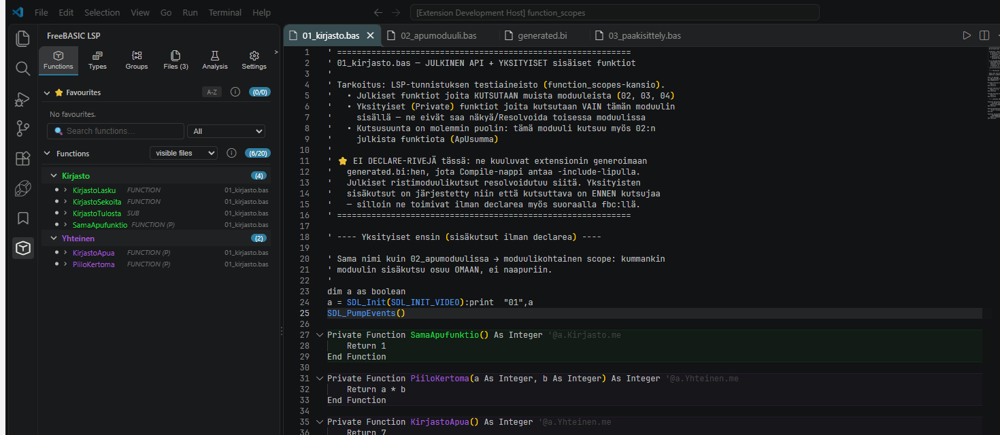
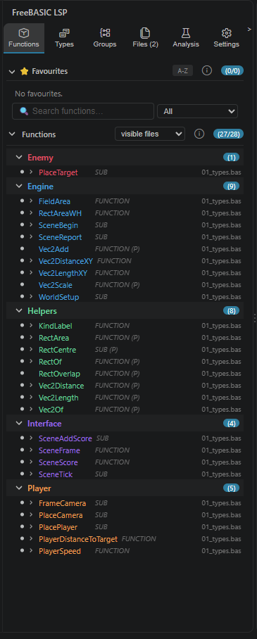
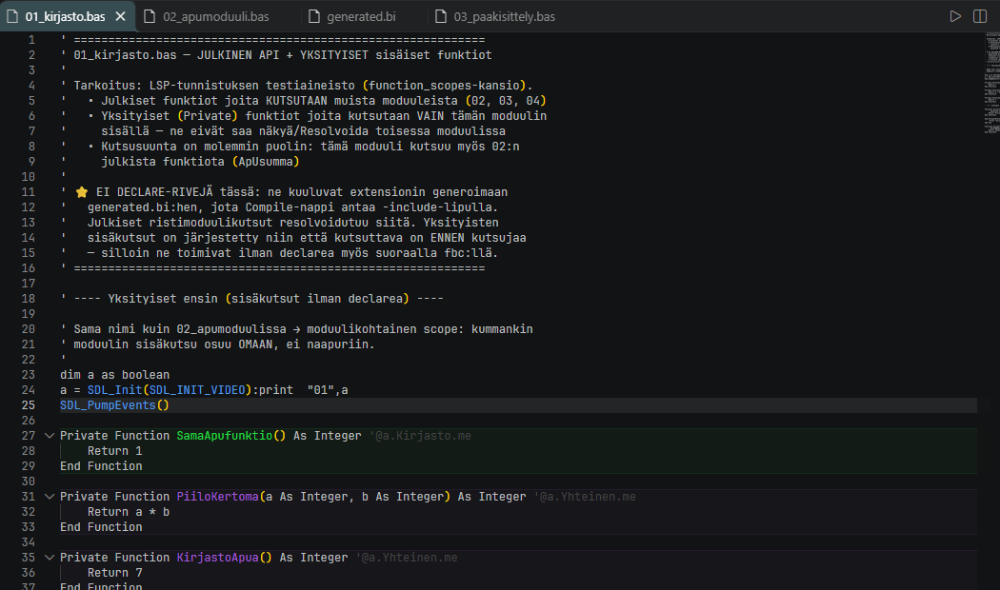

What problems does this solve?
Growing FreeBASIC projects hit the same handful of walls over and over.
The usual way
- Copying
Declarelines from file to file, by hand, forever. - Calls that break the moment you reorder your modules.
- Guessing how a library like BASS, SDL3 or Cairo wants to be declared.
With FreeBASIC Panel
- Fully automatic: every module-level function and sub gets its declaration written for you.
- Order stops mattering: every module sees every other module's signatures, so a call no longer fails just because of file order.
- Type accuracy: parameter types are copied from the definition rather than retyped — so a call that should bind to one overload binds to that one.
The result
- You write application logic instead of bookkeeping.
- Renaming or moving a function needs no follow-up edits anywhere.
- The whole project builds in one command.
Colour groups
Most editors give a file one keyword colour. This one lets you invent your own.

Vec2 variables
near the top: both are the same type, and both are a different colour from it.
The tag is how a group survives a rename, a move between files, and a colleague
opening the same code.Make a group
Give it a name and pick a colour from the picker. Call them whatever fits your project — Library, Own code, Interface, Needs review. Turn one off whenever you want; it keeps its place and its members.
Put things in it
Functions, subs, types and enums all go into groups. Move one at a time from the list or straight from its hover card, or put a whole category in at once when you want every type — or every instance — grouped together.
It shows up in the code
The symbol takes the group's colour in the editor straight away, and keeps the same colour everywhere else it appears. Nothing has to be kept in step by hand afterwards.
An instance can differ from its type
An instance of a type does not have to follow the type's colour. Put the instance in its own group and it takes that colour instead — useful when one variable of a type matters to you and the rest do not.
Fall back, do not blank out
An instance with no group of its own takes its type's colour, and a type with no group stays a neutral grey. So nothing ever disappears just because you have not classified it yet.
Ungrouped is a real group
Everything you have not put anywhere lands in a holding group, kept in a fixed place so the list never reshuffles under you. It is also the quickest way to see what is still unaccounted for.
How it takes the work off your plate
What the tool does in the background, while you get on with the actual code.
Declarations, generated
The extension reads your modules and collects every module-level function and sub. That list is written to a single file which the compiler is told to read first, so no module ever calls something the compiler has not been told about.
Libraries without the guesswork
Include lines are listed in the Files view, where you can see at a glance what your project pulls in and give library code a colour of its own. Point the extension at your FreeBASIC installation and the header libraries behind those includes are recognised too — so a type name coming from a header is not reported as an unknown symbol.
One command to build
However many modules the project has, the checked files go to the compiler in a single invocation with the generated declarations ahead of the file names. The compiler's own output is shown unchanged.
What the files look like
Your own code stays untouched. The generated file lives beside it.
Your module — includes stay here
' Includes belong in your code
#include_once "bass.bi"
' No declarations needed
subway(100)
Dim tulos As Integer = ApuSumma(5)The build command
# Generated file first, output flag last
fbc -include generated.bi 01_kirjasto.bas 02_apumoduuli.bas -x peli.exe